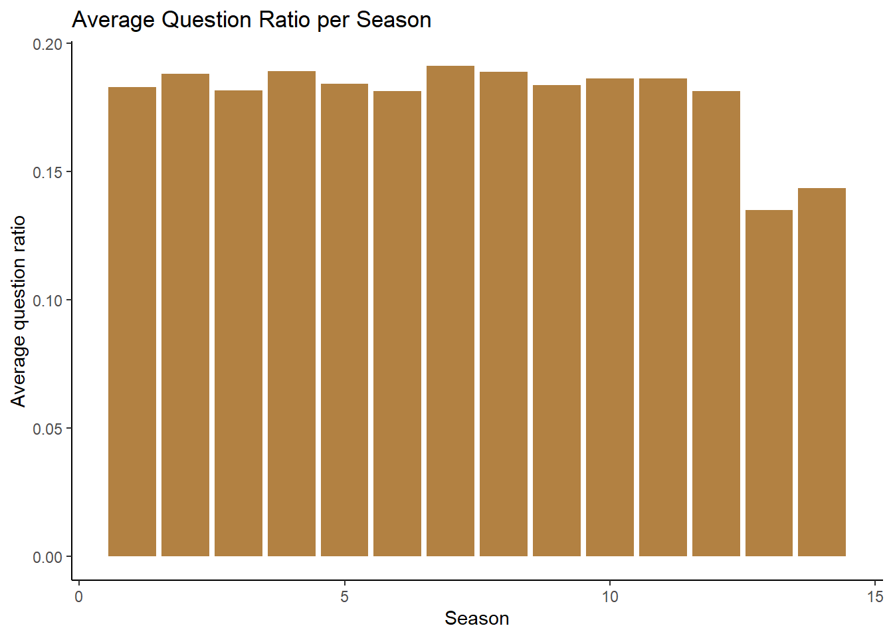
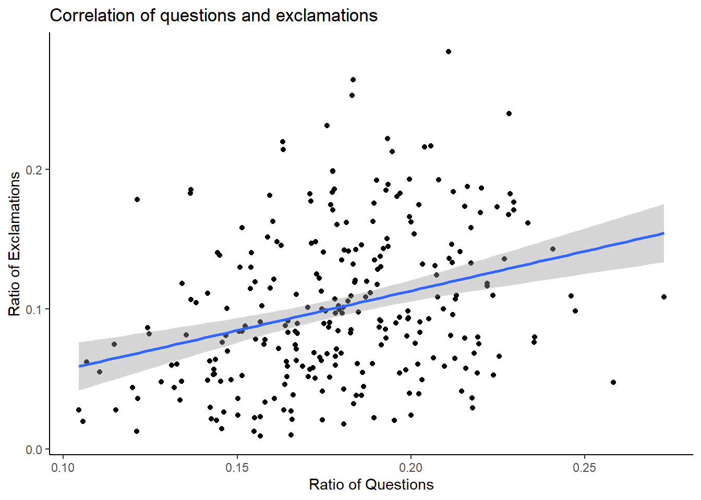
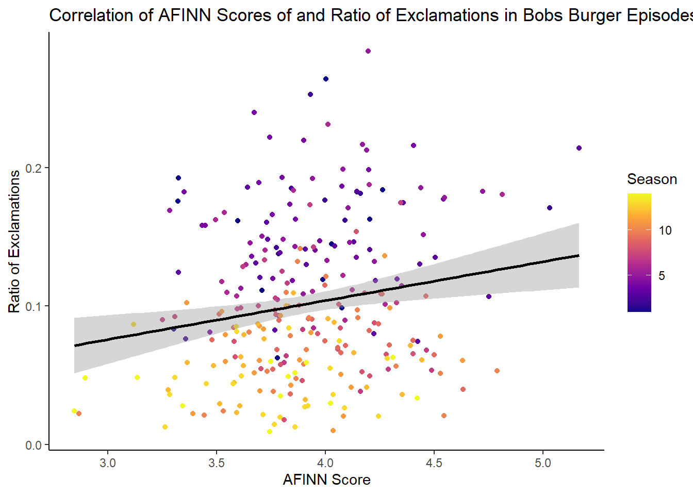

Portfolio 5
library(tidytuesdayR)## Warning: package 'tidytuesdayR' was built under R version 4.4.3library(tidyverse)## Warning: package 'tidyverse' was built under R version 4.4.3## Warning: package 'purrr' was built under R version 4.4.3## ── Attaching core tidyverse packages ──────────────────────── tidyverse 2.0.0 ──
## ✔ dplyr 1.1.4 ✔ readr 2.1.5
## ✔ forcats 1.0.0 ✔ stringr 1.5.1
## ✔ ggplot2 3.5.1 ✔ tibble 3.2.1
## ✔ lubridate 1.9.4 ✔ tidyr 1.3.1
## ✔ purrr 1.0.4
## ── Conflicts ────────────────────────────────────────── tidyverse_conflicts() ──
## ✖ dplyr::filter() masks stats::filter()
## ✖ dplyr::lag() masks stats::lag()
## ℹ Use the conflicted package (<http://conflicted.r-lib.org/>) to force all conflicts to become errorslibrary(ggplot2)tuesdata <- tidytuesdayR::tt_load('2024-11-19')## ---- Compiling #TidyTuesday Information for 2024-11-19 ----
## --- There is 1 file available ---
##
##
## ── Downloading files ───────────────────────────────────────────────────────────
##
## 1 of 1: "episode_metrics.csv"episode_metrics <- tuesdata$episode_metricsWhat season has the most questions?
episode_metrics %>%
group_by(season) %>%
summarise(average_qr = mean(question_ratio, na.rm = TRUE)) %>%
ggplot(aes
(x = season, y = average_qr)) +
geom_col(fill = "#B28142") +
labs(title = "Average Question Ratio per Season",
x = "Season",
y = "Average question ratio") +
theme_classic() 
I choose the color to matach the color of burger buns!
I am predicting that the ratio of questions and exlamations in the dialogue will correlate significantly.
ggplot(episode_metrics, aes(question_ratio, exclamation_ratio)) +
geom_point() +
geom_smooth(method = "lm") +
labs(title = "Correlation of questions and exclamations",
x = "Ratio of Questions",
y = "Ratio of Exclamations")+
theme_classic()## `geom_smooth()` using formula = 'y ~ x'
cor.test(episode_metrics$question_ratio, episode_metrics$exclamation_ratio, method = "pearson")##
## Pearson's product-moment correlation
##
## data: episode_metrics$question_ratio and episode_metrics$exclamation_ratio
## t = 5.2464, df = 270, p-value = 3.14e-07
## alternative hypothesis: true correlation is not equal to 0
## 95 percent confidence interval:
## 0.1921724 0.4083206
## sample estimates:
## cor
## 0.3041561dialogue density *exploratory
ggplot(episode_metrics, aes(x = season, y = dialogue_density)) +
geom_point() +
labs(title = "Dialogue density",
x = "Season",
y = "Dialogue density")
I predict that an absolute value of sentiment variance (I realized afterwards that although AFINN scores can be negative, none of the episodes had a negative score so this turning this into an absolute value was unnecessary) will be positively correlated with ratio of exclamations
library(viridis)## Warning: package 'viridis' was built under R version 4.4.3## Loading required package: viridisLiteepisode_metrics <- episode_metrics %>%
mutate(AFINN_abs = abs(sentiment_variance))
ggplot(episode_metrics, aes(AFINN_abs, exclamation_ratio)) +
geom_point(aes(color = season)) +
geom_smooth(method = "lm", color = "black") +
labs(title = "Correlation of AFINN Scores of and Ratio of Exclamations in Bobs Burger Episodes",
x = "AFINN Score",
y = "Ratio of Exclamations",
color = "Season"
)+
theme_classic()+
scale_colour_viridis_c(option = "plasma")## `geom_smooth()` using formula = 'y ~ x'
cor.test(episode_metrics$AFINN_abs, episode_metrics$exclamation_ratio, method = "pearson")##
## Pearson's product-moment correlation
##
## data: episode_metrics$AFINN_abs and episode_metrics$exclamation_ratio
## t = 3.0838, df = 270, p-value = 0.002256
## alternative hypothesis: true correlation is not equal to 0
## 95 percent confidence interval:
## 0.06698705 0.29687562
## sample estimates:
## cor
## 0.184453